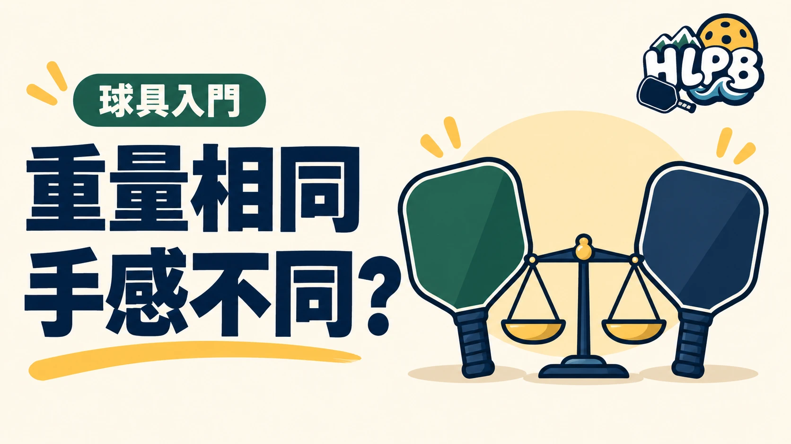

兩支球拍秤起來一樣重，連續揮拍的感覺卻可能不同。秤上的克數，沒有說完重量分布。
三個重量指標，回答不同問題
| 指標 | 在看什麼 | 不能直接當成 |
|---|---|---|
| 靜態重量 | 整支球拍靜止時的總重量，常以 g 或 oz 標示 | 揮拍快慢或整體性能分數 |
| 揮重 Swing weight | 球拍繞揮動軸轉動時的慣性，受重量分布影響 | 另一種克數 |
| 扭重 Twist weight | 偏離中心擊球時，拍面抵抗扭轉的能力 | 每一球都能打穩的保證 |
Selkirk 的官方說明指出：較高揮重通常伴隨較高的揮動負擔，較高扭重則代表較強的偏心抗扭穩定。數字大不等於每個人都適合。同樣總重量，也可能有不同揮重與扭重。
看數字之前，先確認比較條件
揮重、扭重是慣性指標，不是公克。比較不同來源的數字時，要先核對測量方式、單位與球拍狀態。握把布、護邊及配重也會改變成品的重量與分布。
試打時怎麼記錄？
以下是 HLPB 的試打建議，不是器材分級：保持相同的球與相近條件，分別觀察連續準備與揮拍是否順手，以及偏心擊球時拍面是否容易轉動。先記錄差別，再判斷哪種取捨符合自己的動作。
不要只為追求較高數字就自行加重；先了解原廠調整限制與賽事規定。試打結果也不能只歸因於一個重量指標。
三種指標為什麼不能互相代替？
總重量是把整支球拍放上秤後得到的數字；揮重與扭重則都與旋轉慣性有關，但觀察的轉動方向不同。把更多重量放在不同位置，即使總重量相同，也可能改變動起來的反應。因此，不能用某支拍的公克數直接算出它的揮重或扭重。
高揮重與高扭重，要一起看取捨
依 Selkirk 的說明，較高揮重與較高扭重分別對應揮動及偏心抗扭的不同特性。選拍時不宜只找兩項都最高的產品：先比較自己能否持續操作，再看擊球反應。這兩個指標都不是技術程度分數，也不能把不同測試者的數字直接排成排行榜。
| 比較之前先問 | 缺少答案會發生什麼事 |
|---|---|
| 量的是同一厚度、拍型與版本嗎？ | 可能把不同球拍當成同一個型號 |
| 數字使用相同量測方式與單位嗎？ | 看似精確，卻不適合直接比較 |
| 有沒有加握把布、護邊或配重？ | 實際拿到的狀態與測試狀態不同 |
| 資料來自單支實測還是產品範圍？ | 容易把一個數字當成每支拍都相同 |
試打後，怎麼把感受變成選擇？
先寫下『能否順暢回到準備位置』與『偏心擊球時是否容易扭動』，再對照測量資料。一次只比較少量候選拍，並保留同一款球與相近練習條件。當數據與感受不一致時，先核對球拍版本與配件，而不是勉強說服自己適應一組漂亮數字。
原始資料
資料核對：2026/10/19。
最後查證：2026-10-19｜資料來源：HLPB 編輯整理與正文所列官方資料
返回文章列表